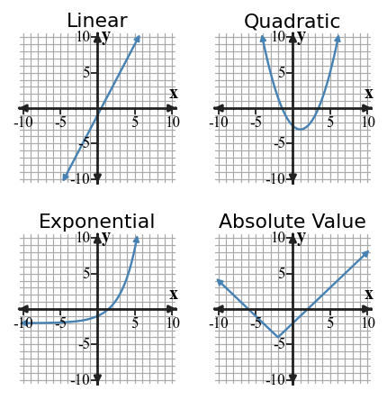
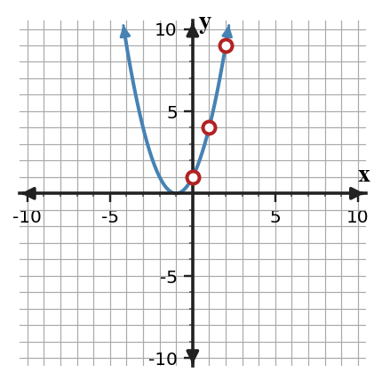

Mathematical idea: A function family is identified by patterns such as constant differences, constant ratios, symmetry, or a recognizable graph shape.
Today you will compare tables, equations, graphs, and contexts instead of relying on a single clue. You will practice naming a family and explaining the evidence that makes that family reasonable.
Learning Target: Students will identify common function families from graphs, equations, tables, and contexts.
I can statements
This is a long-range preview for future lessons. Do not solve it today. Instead, annotate it individually. Circle anything familiar, underline symbols or directions that seem important, and write notes about what information you think will be needed later.
As you annotate, ask yourself: What parts (words, symbols, graphs) do you KNOW? What parts look FAMILIAR? What parts look like jibberish?
Design a four-representation model for a quadratic with vertex $(2,-3)$ and $y$-intercept $5$: a short context, a four-row table, an equation, and a description of the graph. Make sure each representation gives evidence for the same family.
Directions
Read the introduction aloud with a partner or in a small group. As you read, annotate the text by highlighting important ideas, circling key vocabulary, and writing short notes about connections, questions, or predictions in the margins.
Function families help us organize relationships that behave in similar ways. A table, graph, equation, or context can all give evidence about the family. Strong evidence names the pattern, not just the answer.
A graph can make a relationship easy to recognize at first glance. But graph shape by itself can be misleading if the window is small or if two families look similar over a short interval. It is stronger to connect the shape to a rate, difference, ratio, vertex, or other feature.
Imagine two tables whose outputs both increase as the input increases. One table adds the same amount each time, while the other multiplies by the same factor each time. The better family choice comes from checking the repeated pattern, not from saying that both tables go up.
Key representations for this section include parent-function graphs, tables with first differences or ratios, equations in recognizable forms, and contexts with change patterns. Each representation gives a different kind of clue about the relationship.
In modeling, a family choice should fit all the information you have. If a context describes steady hourly change, linear may fit; if it describes repeated doubling, exponential may fit; and if it describes symmetry around a highest or lowest point, quadratic or absolute value may fit.
Stop and Discuss
Classifying a function means matching the evidence to a family pattern.
| Evidence | What to check | Likely family |
|---|---|---|
| Equal first differences | $+3,+3,+3$ | Linear |
| Equal second differences | $+2,+2$ | Quadratic |
| Equal ratios | $\times 2,\times 2$ | Exponential |
| Two straight arms meeting at a vertex | slope changes sign at one point | Absolute value |

Context: If time is the input, the family describes whether the output changes by equal amounts, by equal factors, or around a key feature such as a vertex.
A bike rental shop charges a fixed starting fee and then adds the same charge for each hour.
| Hours | 0 | 1 | 2 | 3 |
|---|---|---|---|---|
| Cost | 6 | 10 | 14 | 18 |
A streaming service tracks the total number of downloaded songs after each week.
| Weeks | 0 | 1 | 2 | 3 |
|---|---|---|---|---|
| Songs | 12 | 17 | 22 | 27 |
Stop and Discuss
A phone app tracks points earned after completing daily challenges.
| Day | 0 | 1 | 2 | 3 | 4 |
|---|---|---|---|---|---|
| Points | 5 | 8 | 11 | 14 | 17 |
A club records the number of flyers left after each round of delivery.
| Round | 0 | 1 | 2 | 3 | 4 |
|---|---|---|---|---|---|
| Flyers | 160 | 80 | 40 | 20 | 10 |
Stop and Discuss
For equally spaced inputs, differences show whether the output change is steady or changing in a steady way.
| $x$ | 0 | 1 | 2 | 3 |
|---|---|---|---|---|
| $y$ | 1 | 4 | 9 | 16 |
| First differences | $+3$ | $+5$ | $+7$ | |
| Second differences | $+2$ | $+2$ |
The first differences are not constant, but the second differences are constant, so the table gives quadratic evidence.

Context: If $x$ is seconds and $y$ is height, constant second differences can describe a curved relationship rather than steady linear change.
A small design grows by adding tiles in a pattern.
| Step | 0 | 1 | 2 | 3 | 4 |
|---|---|---|---|---|---|
| Tiles | 2 | 5 | 10 | 17 | 26 |
A stage-light pattern uses more bulbs at each level.
| Level | 0 | 1 | 2 | 3 | 4 |
|---|---|---|---|---|---|
| Bulbs | 4 | 7 | 12 | 19 | 28 |
Stop and Discuss
A student looks at the table and says, “This must be exponential because the outputs get larger faster each time.”
| $x$ | 0 | 1 | 2 | 3 | 4 |
|---|---|---|---|---|---|
| $y$ | 3 | 7 | 13 | 21 | 31 |
Student claim: "The table is exponential because the outputs grow faster."
A student says the table is linear because every output is bigger than the one before it.
| $x$ | 0 | 1 | 2 | 3 | 4 |
|---|---|---|---|---|---|
| $y$ | 2 | 6 | 12 | 20 | 30 |
Student claim: "The table is linear because it keeps increasing."
Stop and Discuss
You identified common function families by using evidence from tables, graphs, equations, and contexts. A strong answer names both the family and the clue that supports it.
Constant first differences support linear relationships, constant second differences support quadratic relationships, and constant ratios support exponential relationships. Graph features such as a vertex or V-shape can add evidence when paired with a table or equation.
A common error is naming a family from a quick visual clue without checking the pattern.
Strong understanding means you can compare representations and explain which evidence makes one family more reasonable than another in a situation.
Look back at the future task. Do not solve it yet. Highlight one part that makes more sense now than it did at the beginning. Circle one part that still feels unfamiliar. Write one sentence about what representation you would look at first.
A table has equal first differences when inputs increase by $1$. Name the most likely family and the evidence that supports it.
Classify the family for the table and state the rate, difference, or ratio that supports your choice.
| $x$ | 0 | 1 | 2 | 3 |
|---|---|---|---|---|
| $y$ | 4 | 7 | 10 | 13 |
What is one idea about recognizing function families you understand better now than at the start of class? Write at least one complete sentence.
What is one thing about recognizing function families you still want to understand or practice? Be specific — name the idea, not just "everything."